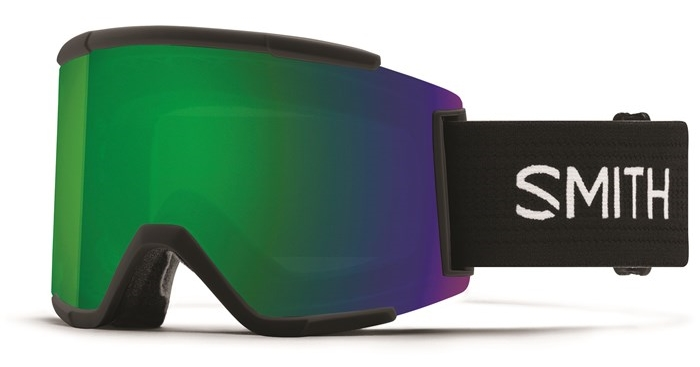

I’ve been snowboarding off-and-on for over 25 years but have never owned a decent snowboard. I recently decided to get a good snowboard and bindings and, like everything else I buy, I researched it to death before purchasing. This post includes all of my research notes, which should be helpful for folks looking for their first board or for those of us who haven’t looked at snowboard gear in a very long time.
Any new board would be a thousand times better than anything I’ve ever ridden, so I could have just grabbed the cheapest new board out there and been good for a while. But I wanted something I could grow into and keep for years, which kicked off this mini research project. Since I spent so much time on this and took so many notes, I figured I would share everything I learned with you to hopefully save you a bunch of time and help you narrow down your options. Keep in mind that I have not personally ridden any of this gear (other than the boots). I’m only echoing what I heard from the folks at local snowboard shops and my friends. I’ll be able to post more thoughts once I get my new board out on the mountain and can test it for myself.
Over the last couple of weeks, I physically visited the local REI, Evo, Play It Again Sports, and C3 Shop locations in Seattle. I was in each store for about an hour and then did follow up calls that lasted about 1 hour or so each. All the shops employ experienced snowboarders that get paid to teach you about all the options. So, giving any of them a call or stopping by their shop is a great place to start. One thing to note is that for REI and Evo, you will not find any sales or deals in-store. They only have the latest new gear in stock. You can go to learn, but you probably won’t buy there if you want a deal.
I also did a lot of online research, read a lot of blogs and reviews, and watched a ton of YouTube videos. All-in-all, I probably spent 20 hours researching snowboarding gear. It sounds like a lot, but I’m confident that I just purchased the right gear for my rider profile.
Sites
Here are some sites that were super helpful:
- Shopping Sites: Evo.com, Tactics.com, and REI.com. I’d avoid Amazon.com for snowboards as they are mostly listed at full price, but I did by my bag there. Out of all the sites, Tactics does the best job of explaining all the aspects of the board, for example, take a look at the graphics on this Attack Banana page.
- Reviews: The Good Ride. This site appeared to be the best out of all of them. For example, check out the details in this Capita Mercury review.
- YouTube Channels: SnowboardProCamp, House Outdoor Gear.
Here’s why I bought most of my gear from Evo.com:
- They beat any competitor’s price by 5%. They beat an REI online price by 5% for me. Competitor must be US based.
- They will refund you the difference of any price drops within 20 days of purchase. Because I had the goggles it ordered still in my cart, I got a price drop email notification, then sent them an email, and they issues a refund for the difference. So, I recommend that you keep all the gear you have ordered in your cart so you can get the price drop notifications.
- They have a showroom in Seattle. I visited in-person and spent a good hour with them. They don’t have deals in-store, but seeing the boards in person and talking with someone about them helped a lot.
- They have very knowledgeable sales people, both in-store and online. I talked with them for at least an hour on the phone.
- They have excellent email support that responds the same day. I was able to get clarification on my order and they have a very helpful and positive communication style.
Given all of that, I ended up buying my Union Force bindings from Tactics.com because of the amazing deal they had going on. Evo and REI were both seeing at list price of $250 and I got them for $197. If Tactics didn’t have the deal, then I likely would have bought from REI.com, because I’m and REI member and I would have received the 10% member dividend back. Evo would have beat the price, but I caught the Tactics deal when there were only 2 hours left before it expired, so I had to act fast.
I bought my bag from Amazon.com because the bags on Evo and Tactics were more expensive and weren’t padded.
My Rider Profile
Here’s my rider profile:
- Skill Level: Intermediate. Comfortable on blue and black diamond trails.
- Trail Type: All mountain, mostly groomers, powder and a little park and jibbers – nothing too crazy, not too hard hitting.
- Height/Weight: I’m 6’ 1" and around 170lbs.
- Foot Size: I wear a size 11 boot.
My New Gear
Here’s the gear I bought:
- Board: Lib Tech Attack Banana HP 2018 (Last year’s model), Size 159 (Evo.com)
- Boots: K2 Maysis boots, which I bought from REI last year (2017) (REI)
- Bindings: Union Force 2019 (Tactics.com)
- Goggles: Smith Squad XL (Evo.com)
- Mittens: Dakine Titan GORE-TEX Mittens (Evo.com)
- Bag: Athletico Freestyle Padded Snowboard Bag (Amazon.com)
Board
I ended up purchasing the Lib Tech Attack Banana HP 2018 (Last year’s model), Size 159. My friend rides Lib Tech and he raves about them. I have never ridden Lib Tech, but every person I talked with recommends them. Ultimately, the goal of my research was the determine if Lib Tech was right for me or if there was a better option. So, this means that I went in to this research with a bias, but a recommendation from a friend that I trust, and I know has no ulterior motive, goes a very long way.
Lib Tech has many models to choose from and many of them are all-mountain. Many folks recommended the Lib Tech Cold Brew, which retails for $460 new. The Skate Banana and Attack Banana have been around for a long time and are in the $600 range new. The T. Rice Pro and TRS are good options and are also around $600. So, the cheapest Lib Tech you are going to get is around $450 new – the Cold Brew. There are so many options, that I felt like I should go to a demo day and try them all out, which I likely will still do. REI has a demo day schedule if you are interested.
To be completely transparent, the biggest reason I went with Lib Tech is because REI had last year’s Attack Banana model on clearance for $412 (originally $590) and Evo was beat REI’s price by 5%. So, I ended up buying from Evo and paying $371 for a $590 board. You can read more about Evo’s Price Match guarantee here. There wasn’t anything even close to that quality and price at any store or site I visited. I was looking at other boards that are in a lower quality category to save money, but they were only $100 less than the Lib Tech. I could have saved $100 by going with different board, but I wanted a board that I can grow into and ride for many years. I would not have purchased the Attack Banana at full price. I probably would have gone with Lib Tech Cold Brew or Capita Defenders of Awesome (DOA) in the $400 range.
The most direct advice I can give you is to do what I did: get last year’s model on clearance or on sale – so you get twice the board at close to the same price. Any Lib Tech or Capita sale board will probably be better than the others. REI.com, Tactics.com, and Evo.com are the best places to find these deals. Also, good 'ole Google shopping search was helpful.
The biggest contenders to the Attack Banana were…I seriously considered all of the following and so should you.
- Capita Defenders of Awesome (DOA) – $440 - I read that this board isn’t great in powder. This board has won a bunch of “good wood” awards and was recommended by everyone I talked with.
- Capita Mercury – $550 - I heard that this board is VERY hard charging and frustrating at slower speeds. I will occasionally board with my kid, so I wanted something that was versatile and performed well at any speed.
- Lib Tech Cold Brew - $460 - Probably the number one contender to the Attack Banana, but the Attack Banana was less expensive after the deal Evo gave me.
- Capita Outerspace Living – $400 - I heard this is more of a park board. But everyone recommended it as a good option.
- Capita Warpspeed - $510 – C3 Shop had last year’s model on sale, but after researching it most folks say it is for really big people who want to drive hard.
- Ride Warpig – $460 - Everyone raved about this board. It’s short and wide. I ride a 159, but they recommended I ride a 151 to 154 because it is so wide. I decided against this board because it seemed better suited as a second board, not a primary one. I wanted my first board to be a standard width and size for my height and weight. Out of all the boards I learned about, this is the one I would love to try someday.
- Burton Custom - $600 – Lots of folks recommend that Custom, but I couldn’t find one close to my price range.
- Arbor Foundation - $260 – Folks said this would be too soft for me. They said it was more of a true beginner or rental board.
- Rome Reverb Rocker – $260 - I probably would have gone with this board if I wanted to stay in the $250 range. It’s a sintered base with a hybrid profile (more on that below)
- Rossignol Angus Magtek - $260 – Folks said that the profile (while hybrid) is too much on the rocker side for them and they didn’t like it. I didn’t get any recommendations for anything Rossignol, so I decided to pass on the brand.
A big factor for me was price. I wanted to stay around $500 for both board and bindings. Which, as it turns out, is very hard to do for an intermediate board. The bindings I decided on (Union Force) are $250, so that only left me with $250 for a board, which is not enough for a Lib Tech, unless you want to go used. Since this board will be my board for a long time and I wanted to know the complete history of it, I didn’t want to go with a used board. I could have gone with a less expensive binding, which I would have done if my budget was locked at $500. Boards in the $250 range are beginner rental type boards that are very soft and would be very squirrelly at high speeds. For example, the Arbor Foundation or Gnu Hyak are “Soft” boards, which means they flex more than a Medium or Stiff board. As a rule of thumb: Beginners generally ride soft boards because they are more forgiving and are easier to control at slower speeds. Since I know I’ll be going fast and board blue/black trials, I decided to stay away from soft boards. I knew for sure that I would be quickly frustrated with it. Soft boards start around $200 and go up to about $300. Medium and stiff boards are generally $275 up to $600.
I went through a period of really trying to limit my budget to $500 and found that Evo.com and REI.com were the best place to narrow things down. They also have board/binding/boot combinations that you could select within your budget. Since I was locked on the bindings (more on that later) – I wasn’t left with a lot of board options in that price range – so I decided to spend more money and get a better board.
Rocker Type
Boards come in many profiles, you will see flat (no bow), camber (bowed up in middle), rocker (bowed up on ends) and hybrid, which is a camber/rocker combination. You could have a camber/rocker/camber setup or a rocker/camber/rocker or any combination of these options. Each board manufacturer will have their own take on a hybrid profile. For my riding style (all mountain), most people recommend a rocker dominant profile, but this is all based on personal preference, so talk with folks and see what you feel most comfortable with. Or better yet, rent various boards or go do a demo day and see which profile you like better.
Everyone that talked about Lib Tech, said that you are safe with any board in the “C” profile, which is a hybrid of some sort. The Attack Banana is the C2E, which means it is camber under the foot and rocker between the feet. Ultimately, because I have never ridden a Lib Tech, the profile variant wasn’t a deciding factor for me.
SnowboardingProfiles.com has a great page here that explains profiles in more depth.
Base
You generally have two options when it comes to snowboard bases: Extruded or Sintered. Extruded bases are made from melted plastic. Sintered bases are made from crushed plastic. Extruded requires less maintenance, but sintered can be faster if waxed regularly. In general cheaper boards are extruded and more expensive boards are sintered.
The Attack Banana that I bought is actually extruded. Lib Tech calls their extruded base tech “TNT”. I initially assumed that all Lib Tech’s were sintered (because of the high price), but found out after my purchase that it wasn’t. I was a bit disappointed because I thought I was getting sintered, but I researched it a lot and talked with Evo, REI, and Tactics. They said I shouldn’t really worry about it. Lib Tech is a great board that will last many years and they have a great reputation for building high-quality boards. The support staff at Tactics said that he’s only seen one Lib Tech warranty issue and no complaints in his 3 years at the company.
I found this post on reddit that claims they emailed Lib Tech and got this response:
clutchgolfer: "I emailed Lib - it means there is a layer similar to an extruded base and then another layer is laid on top of it that is a sintered material. Combined that make the co-sintered base which is kinda of a good thing being that It requires less maintenance but provides similar performance. Link to Reddit Post
Seeing this post on reddit set me at ease, but there’s also a lot of complaining online about Lib Tech’s decision to not go fully sintered. I’ll leave it up to you to decide if that prevents you from buying Lib Tech.
I emailed Lib Tech and they responded with this:
Waist Width
Waist Width is the narrowest part of the board, generally right between the bindings. My boot is a size 11 and everyone said the minimum waist width for 10.5 foot and above is 260mm or greater. Because the K2 Maysis is a low-profile boot, I decided that Attack Banana waist width of 255mm was acceptable. I’ll update this post if I get any heel or toe drag.
Unless you are doing crazy carving like Ryan Knapton, who rides a xtra-xtra-wide board at 312mm, then you should be save with the 10.5 boot/260mm rule of thumb. Great series on board width here.
Length
Snowboard lenght is the number of centimeters from tip to tail. At my height and weight, everyone I talked with recommended that I stay in the 158-161 range. You basically want to look at the size specs for your board and make sure you aren’t on the very far end of their recommendations. For example, if they recommend a weight of 110-150 and you are 220lbs, then it’s probably not the board for you. As a rule of thumb, you’ll want a board that falls between your chin and nose when you stand it up in front of you, but more important than that is your weight. If you are ordering online, then just measure that out with a tape measure at home. Or call Evo, Tactics, or REI and they can make some recommendations for you.
Don’t get too stuck on getting the exact length. I could have easily gone with a 158 or 161 and been just as happy. I may even have gone down to 157 or 157MW if that’s all that was available.
Edges
Lib Tech has edge technology called MagneTraction which is supposed to help you get an edge in icy conditions. Other brands have similar tech as well. The cheaper boards in the $200-300 range likely won’t have it.
Given that I’ll be snowboarding in the PNW and it can get icy, then I thought it would be good to get a MagneTraction board. But keep in mind that it does get mixed reviews with some experienced folks saying they haven’t needed it for their entire life and why would they need it now. Ultimately, I wouldn’t get stuck on this feature as a huge deciding factor.
Boots
The best way to find the right boot for you is to go to the shops and try them on. I decided on the K2 Maysis, because they were the most comfortable for me personally and I like the Boa tightening system. The Maysis is a low-profile boot, meaning that although it is an 11, it’s a smaller profile than other boots with the same shoe size. I used them last season and love them.
Bindings
Everyone I talked with at every shop recommended the Union Force bindings. I was going to go with the Flow NX2 bindings, but everyone said that the fold-down-back tech was a fad and never really worked out well. I researched the Union Strata and the Union Falcor but decided on the Force because I don’t want to spend more than $250 on bindings and the Force will be more than enough for me. Some folks said the Strata is a little too soft for them and some said that they had seen the carbon fiber backing break on the Falcor. Rather than try something risky, I just decided on the Force to be safe.
Also, according to someone at Evo, if you are in the Seattle area, you can bring your damaged bindings into the local C3 Shop in Ballard and get parts and repair for free. Which is a huge for me because I hate sending stuff in for repair. I do the same with my coffee grinder via the local Baratza shop. I’ve brought my grinder in there a few times and they fixed it for free. I’m hoping I can get the same with my Union Bindings at the C3 Shop.
I actually ended up catching the Union Force bindings on sale at Tactics.com for $220 and they had an extra 10% sale, so I ended up getting them for $197! Not too bad at all.
Mittens
My mitten selection was easy. I was already ordering my board from Evo, so I went to their site, filtered mittens by Gore-Tex and went with the Dakine Titan GORE-TEX Mittens, mainly because they were $15 off.
I went with mittens versus gloves because I don’t need the dexterity a glove provides, and I wanted to try something different. They also came with inner gloves that are screen friendly, so you can just remove the mitten part and use your phone without freezing your hands.
Goggles

My goggle selection was also easy. When I was at the Evo store, the goggles expert recommended Smith Squad XL, but they were $120, which was too expensive for me. When I was talking with Evo on the phone, they said pick a goggle that comes with an extra lens. Since I will be doing some night boarding, I wanted a low-light lens and the Smith Squad XL comes with two ChromaPop lenses. I went with the Green/Blue versus titanium color because the Evo guy said that Green/Blue is better for grey skies, which is what I’m going to get in the PNW.
Evo.com was also having a sale on Smith Squad XL, that brought them down from $120 to $77. I just added them to my board order because I didn’t want to miss out on that deal.
I didn’t go with the Smith Squad because it doesn’t come with two ChromaPop lenses, but the XL does.
In addition, a few days after I bought the goggles, they went on sale for $64. Because I still had them in my cart, they sent me an email to let me know the price dropped. So, I emailed Evo and they refunded me the difference!
Other folks recommended Giro, Battery and Axis, but they weren’t on sale or didn’t come with multiple lenses.
Keep in mind that your glasses will not fit in these goggles - I’m recently started wearing contacts, so I’m good. But if you need to wear glasses, then check out “Over the Glasses” goggles, also known as OTG.
Bag
Now that I have all this super nice gear, I want a really good way to transport it in the car and (maybe eventually) a plane. I looked at the Burton Space Sack on clearance for $48, but the review basically say there is no padding. Tactics.com has the Daikine Pipe Snowboard Bag for $50, but reviews say very little padding as well. The next most expensive bag on Evo is $65 and I didn’t want to spend more than $50, so I took to Amazon.com, searched for snowboard bags, sorted by price, read all the reviews and finally landed on the Athletico Freestyle Padded Snowboard Bag for $50. This review basically sold me on it. I just got it in and it fits my board, bindings, helmet, gloves. I probably could have fit my boots in there as well, but I didn’t want to scratch the top of my board. I’ll be carrying another boot bag anyway, so no big deal.
Ride!
There are so many snowboard options out there and it can be very overwhelming. I hope this post helped you narrow things down a bit.
If you found this post helpful, then please leave a comment or share it with a friend. If you see anything in this post that is incorrect or you have a differing opinion on, then please comment and we’ll learn and discuss.
Good luck with all your snowboard research and more importantly go get a board and ride!
Jon